Arbites Suppression Turret
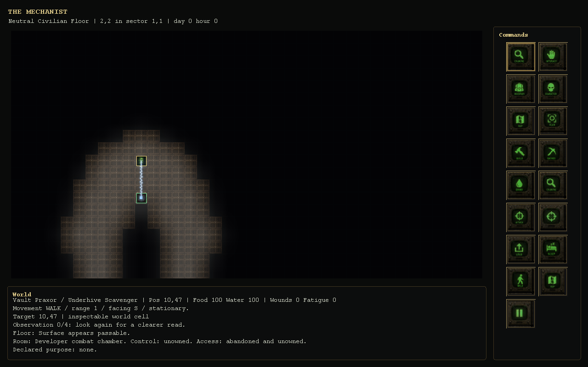
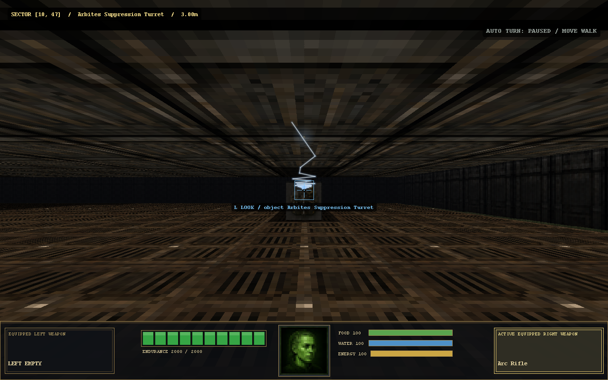
Four existing turret mounts and all five vehicle classes, executed through the game's structural combat authority. 486 attacks at three seeds, replayed identically: six weapons, three fire modes, nine targets. Native captures below use the actual GamePanel, tiles and Doom renderer, 50 ms after an executed Arc Rifle attack.
In the developer facility: /devroom fixtures all 91000. The combat console also offers turret-only, vehicle-only and clear controls. New actor matches retain the selection; clearing the arena removes test targets.
Verified finite ammunition, one-turn action costs, armor penetration, dry and blocked shot refusals, armor-to-chassis progression, wreck state, eight component states per vehicle, persisted component readback, seeded placement and isolated cleanup. Fixed final-hit damage overreporting and destroyed defenses retaining passive bonuses.
Attack records · Component records · Capabilities and gaps · Assertions · Package hashes and results · Rerun


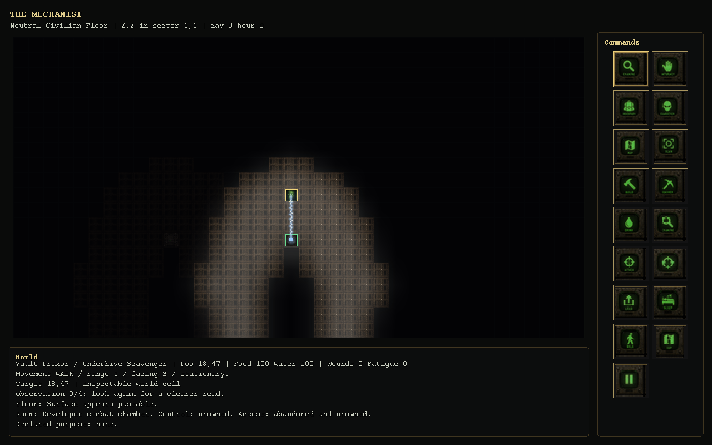
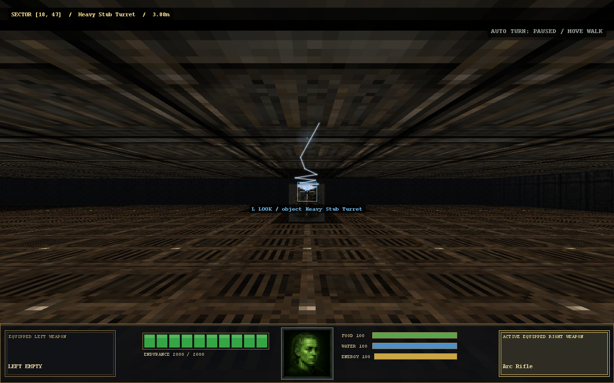
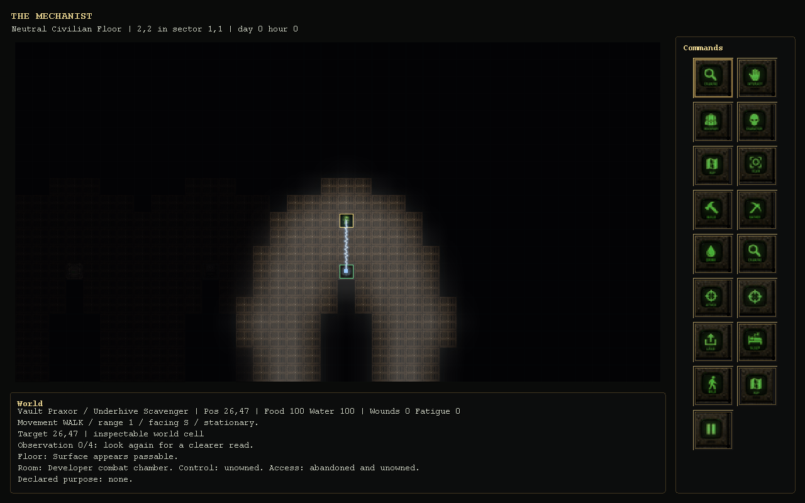
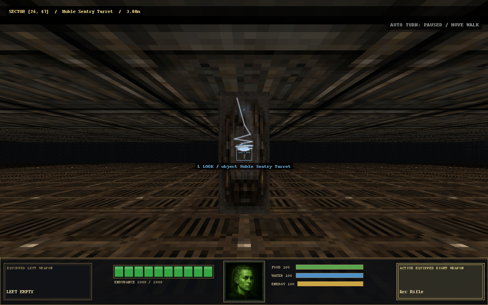
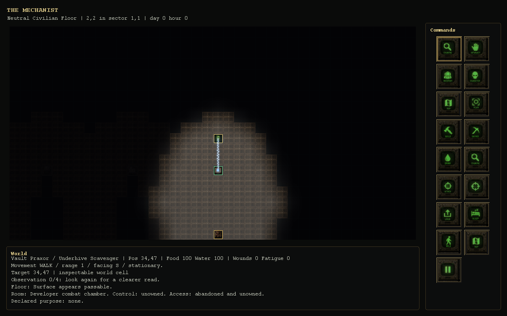
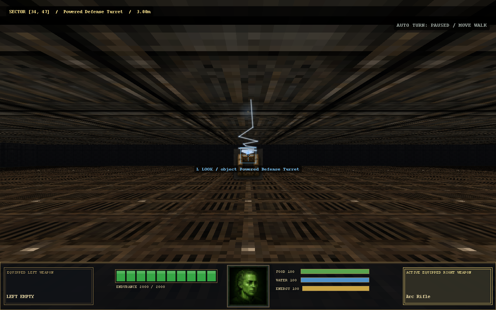
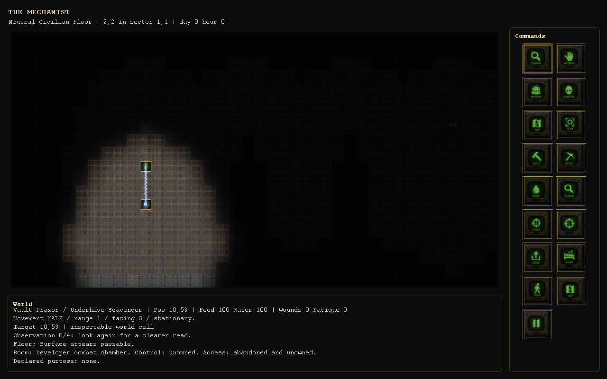
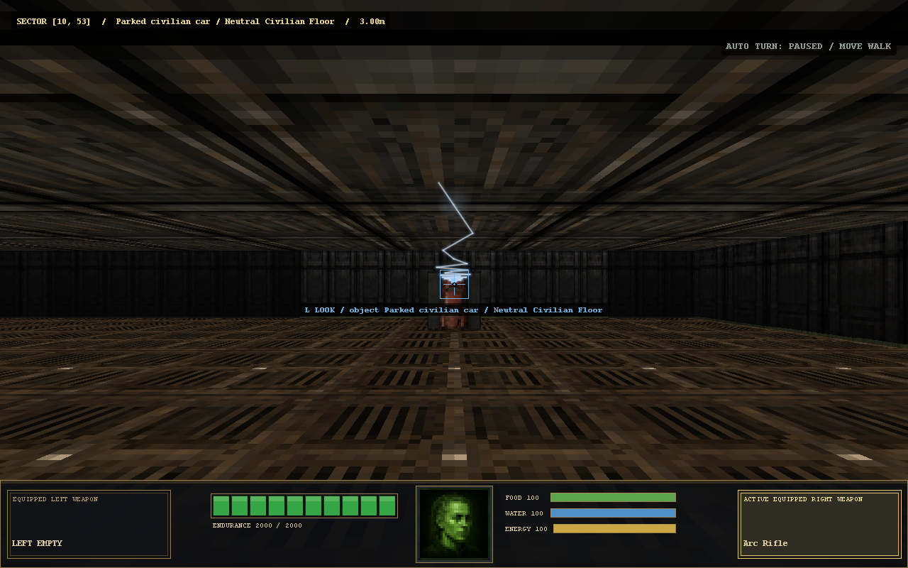
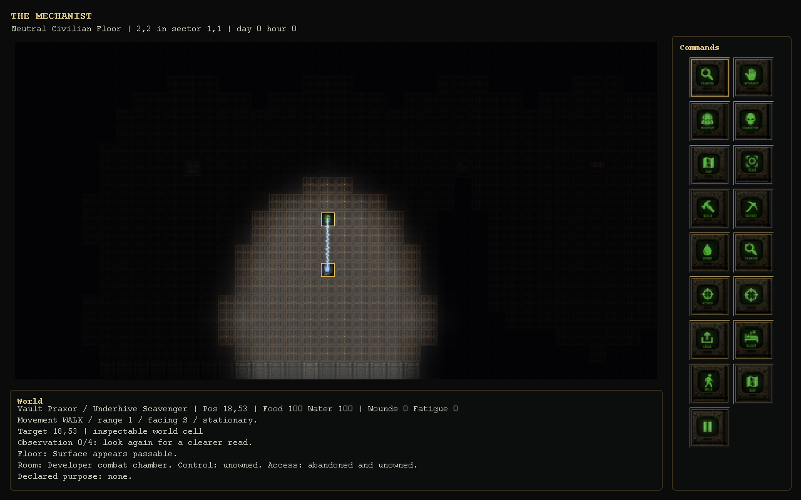
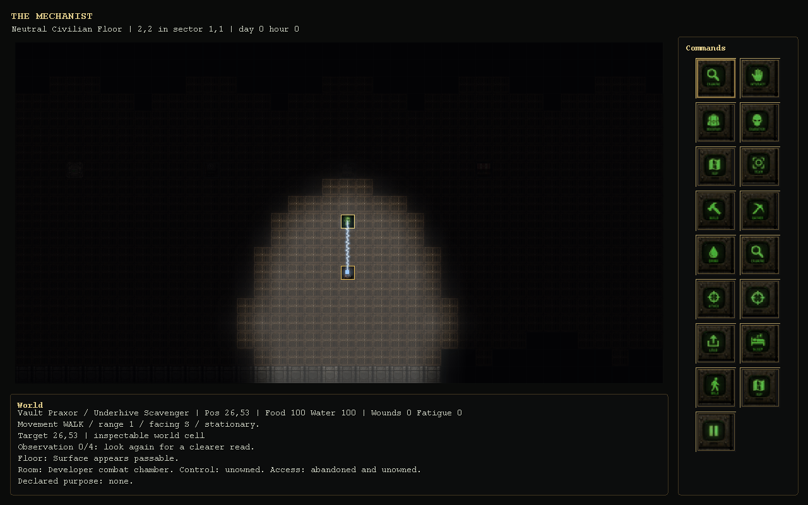
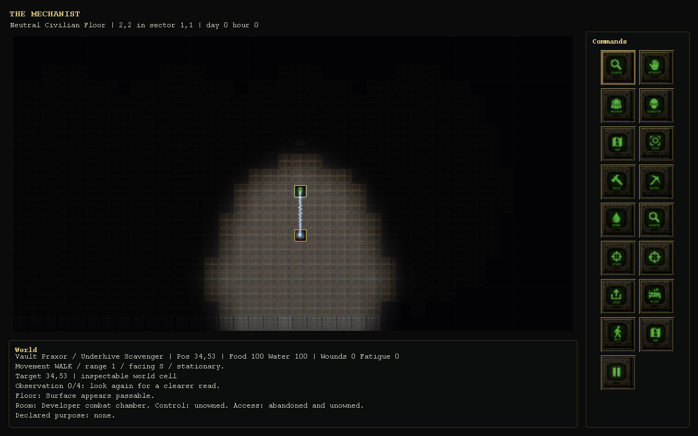
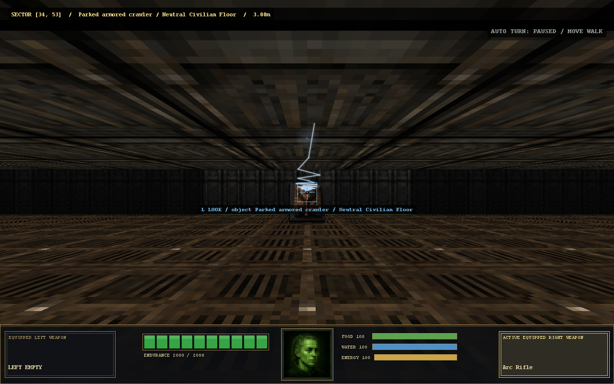
Weapon pitch, speed and start-time variation audition
| CombatFixtureExecutionSmoke | PASS | log |
| Milestone06StructuralScaleCombatSmoke | PASS | log |
| Milestone06VehicleRuntimeFoundationSmoke | PASS | log |
| Milestone06VehicleTransitSmoke | PASS | log |
| Milestone06VehicleAccessSmoke | PASS | log |
| Milestone06VehicleManifestSmoke | PASS | log |
| Milestone06VehicleFuelHistorySmoke | PASS | log |
| Milestone06VehicleMaintenanceSmoke | PASS | log |
| Milestone06VehicleOperationFeedbackSmoke | PASS | log |
| Milestone06VehicleLossSmoke | PASS | log |
| ActorCombatPresentationSmoke | PASS | log |
| ActorCombatExecutionSmoke | PASS | log |
| DeveloperFacilitySmoke | PASS | log |
| WeaponAudioSmoke | PASS | log |
| WeaponSoundVariationSmoke | PASS | log |
| SpatialAudioSmoke | PASS | log |
| Milestone02DoomHudFacingSmoke | PASS | log |